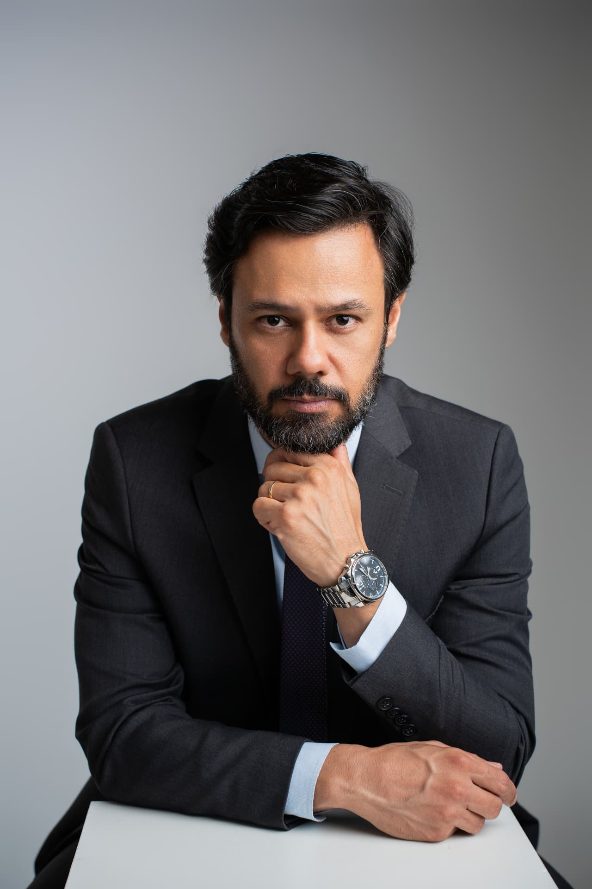

Rescisão Indireta
Quando o empregador descumpre obrigações relevantes do contrato de trabalho, o trabalhador pode buscar judicialmente o reconhecimento da rescisão indireta.
Direito Trabalhista
Problemas trabalhistas exigem orientação estratégica.
Dr. Rafael Ferreira
OAB/SP nº 319.590

Situações comuns que merecem uma leitura jurídica antes de qualquer decisão:
Áreas de atuação
Quando o empregador descumpre obrigações relevantes do contrato de trabalho, o trabalhador pode buscar judicialmente o reconhecimento da rescisão indireta.
Orientação e atuação em situações envolvendo exposição a agentes insalubres ou atividades perigosas.
Análise de jornadas, horas extraordinárias, intervalos e possíveis diferenças trabalhistas.
Atuação em situações relacionadas a acidentes e doenças ocupacionais, incluindo análise das possíveis consequências jurídicas.
Orientação jurídica em situações de humilhação, constrangimento, perseguição ou outras condutas abusivas no ambiente de trabalho.
Análise de situações em que a relação de trabalho pode apresentar características de vínculo empregatício, inclusive contratações como PJ ou autônomo.
Orientação sobre direitos trabalhistas relacionados à gestação, estabilidade e situações de desligamento.
Análise da legalidade da dispensa por justa causa e das circunstâncias que envolvem a rescisão do contrato.
Cada situação trabalhista possui particularidades: documentos, prazos, forma de contratação e o modo como o trabalho era executado no dia a dia. Uma análise profissional ajuda o trabalhador a compreender seus direitos e os caminhos jurídicos possíveis antes de tomar qualquer decisão.
Cada relação de trabalho tem documentos, prazos e detalhes próprios. O caso é examinado a partir do seu contexto real.
Comunicação direta e linguagem clara, para que você compreenda cada etapa do que está sendo discutido.
Definição dos caminhos possíveis a partir das provas disponíveis e das particularidades da sua situação.
Trabalho concentrado em Direito Trabalhista e na defesa dos direitos do trabalhador.
Avaliações do Google
Confira algumas das avaliações deixadas por clientes no Google.
5,0
39 avaliações
no perfil oficial do Google
Fale diretamente pelo WhatsApp e apresente brevemente sua situação.
As informações apresentadas serão avaliadas para compreender o contexto jurídico.
Você receberá orientação sobre os próximos passos possíveis para o seu caso.
É o rompimento do contrato de trabalho por iniciativa do empregado quando o empregador comete falta grave, como descumprimento de obrigações contratuais, atraso reiterado de salários ou exigências abusivas. O reconhecimento depende de análise das provas e de decisão judicial.
Sim. A justa causa exige previsão legal, proporcionalidade e comprovação por parte do empregador. Havendo indícios de aplicação indevida, é possível discutir judicialmente a validade da dispensa.
De modo geral, quando há trabalho além da jornada contratada ou legal, supressão de intervalos ou ausência de pagamento correto dos adicionais. A verificação depende de controles de jornada, contrato e demais provas.
O adicional é devido em atividades legalmente classificadas como perigosas, conforme normas regulamentadoras. A caracterização normalmente depende de perícia técnica no processo.
Condutas abusivas e repetitivas que expõem o trabalhador a situações humilhantes ou constrangedoras, afetando sua dignidade. A análise considera o contexto, a frequência e as provas disponíveis.
É possível discutir o reconhecimento do vínculo quando estão presentes elementos como pessoalidade, habitualidade, onerosidade e subordinação, independentemente da forma do contrato assinado.
Busque atendimento médico, guarde documentos e atestados e verifique a emissão da CAT (Comunicação de Acidente de Trabalho). Esses registros são relevantes para a análise jurídica posterior.
A legislação prevê estabilidade provisória à gestante desde a confirmação da gravidez até determinado período após o parto. A aplicação concreta depende do tipo de contrato e das circunstâncias do desligamento.